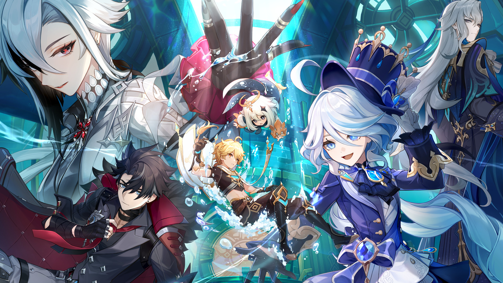

NAME : Nichapat Rodpranee
NICK NAME : Dream
Favorite Thing
My Current favorite game is genshin Impact  Genshin Impact is an action role-playing game developed by miHoYo, published by miHoYo in mainland China and worldwide by Cognosphere, HoYoverse. It was released for Android, iOS, PlayStation 4, and Windows in 2020, on PlayStation 5 in 2021, and is set for release on Nintendo Switch. The game features an anime-style open-world environment and an action-based battle system using elemental magic and character-switching. A free-to-play game monetized through gacha game mechanics. Genshin Impact takes place in the fantasy world of Teyvat, home to seven nations, each of which is tied to a different element and ruled by a different god. The story follows The Traveler, an interstellar adventurer who, at the start of the game, is separated from their twin sibling after the two land in Teyvat. Thereafter, the Traveler journeys across the nations of Teyvat in search of the lost sibling, accompanied by their guide, Paimon. Along the way, the two befriend myriad individuals, become involved in the affairs of its nations, and begin to unravel the mysteries of the land.
And my hobby is watching anime, So my current favorite anime is Conan with plot that say, Shinichi Kudo, a great mystery expert at only seventeen, is already well known for having solved several challenging cases. One day, when Shinichi sees two suspicious men and decides to follow them, he inadvertently becomes witness to a disturbing illegal activity. When the men catch Shinichi, they dose him with an Experimental Drug formulated by the Black Organization and abandon him to die. However, to his own astonishment, Shinichi is still alive and soon wakes up, but now, he has the body of a seven-year-old, perfectly preserving his original intelligence. He hides his real identity from everyone, including his childhood friend Ran Mouri and her father, private detective Kogoro Mouri. He eventually takes on the alias of Conan Edogawa, Upon having decided to move into Mouri Detective Agency, Shinichi who, as Conan, starts secretly solving Detective Mouri’s cases from behind the scenes with his exceptional sleuthing skills, while covertly investigating the organization responsible for his current state, hoping to reverse the drug’s effects someday.
with my VIDIO You can hear voice!
if you want to be friend with me you can follow my instragram down here